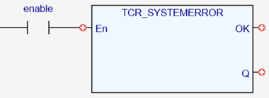

System Parameter.
R eturns a value which indicates which active errors have been reported by the firmware.
|
|
|
|
System error code |
TCR_ SYSTEMERROR returns a value which indicates which active errors have been reported by the firmware. Any bits set in SYSTEM_ERROR will cause the WDOG to be automatically set to OFF, thus halting all motion.
TCR_SYSTEMERROR();

Not available.